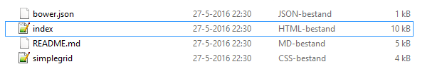

Uitleg: Hoe Simple Grid Installeren!
Simple Grid installeren is super makkelijk, daarom heet het natuurlijk ook Simple Grid. Op deze pagina word in een paar simpele stappen uitgelegd hoe je Simple Grid installeert.
- Het eerste wat je moet doen is Simple Grid downloaden*. Dit kan door hier te klikken!
*Om Simple Grid te downloaden heb je Winrar, Winzip of een ander programma nodig om het Zip bestand te kunnen opnenen.
- Zodra je het bestand hebt download, pak het bestand uit en plaats het in een map. Hier een voorbeeld hoe het eruit moet zien:

- Simple Grid is nu al geinstalleerd! Zo simpel is het. Nu kan u gaan experimenteren met alle mogelijk heden van Simple Grid. Als u de "index.html" opent in uw browser ziet u alle verschillende vakken, ook kan u het bestand openen in notepad of een andere text bewerkings programma en kan u zien hoe Simpel deze grid is opgebouwd.
Klik hier alle mogelijkheden te zien en ook de code ervan.